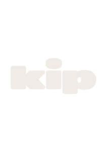

Trade Mark Journal No.2025/020 16 May 2025
UK00004195536 28 April 2025 (9,35,44)

- Class 9
- Mobile apps; Mobile application software; Application software for mobile phones; Downloadable smart phone application software; Smartphone software; Application software for mobile devices; Smartphone software applications, downloadable; Downloadable application software for smart phones; Computer application software for mobile phones; Downloadable smart phone applications (software); Downloadable software in the nature of a mobile application; Downloadable software applications for mobile phones; Mobile software; Application software for smart phones; Downloadable computer software for use as an application programming interface (API); Software for mobile device management; Mobile device management software; Software for mobile phones; Downloadable mobile applications; Downloadable applications for use with mobile devices; Downloadable applications for mobile devices; Software applications for use with mobile devices; Software applications for mobile devices; Software and applications for mobile devices; Web application software; Downloadable application software; Application software; Downloadable mobile applications for use with wearable computer devices; Computer software for mobile applications that enable interaction and interface between vehicles and mobile devices; Downloadable graphics for mobile phones; Application software for wireless devices; Computer application software for mobile telephones; Downloadable mobile applications for the management of data; Software for smartphones; Educational mobile applications; Computer application software; Downloadable mobile applications for the management of information; Mobile phones; Displays for mobile phones; Educational tablet applications; Computer software applications, downloadable; Downloadable computer software applications; Website development software.
- Class 35
- Retail store services in the field of clothing; Online retail store services in relation to clothing; Online retail store services relating to clothing; Retail services connected with the sale of furniture; Retail services in relation to footwear; Retail services in relation to furnishings; Retail services in relation to furniture; Retail services in relation to clothing; Retail services in relation to smartphones; Retail services relating to jewelry; Retail services in relation to coffee; Retail services in relation to lighting; Retail services relating to furniture; Retail services connected with stationery; Online retail services relating to clothing; Retail services in relation to yarns; Online retail services relating to cosmetics; Retail services relating to clothing; Retail services in relation to fashion accessories; Retail services in relation to bags; Retail services in relation to headgear; Retail services in relation to fabrics; Online retail store services relating to cosmetic and beauty products; Retail services in relation to clothing accessories; Online retail services relating to handbags; Mail order retail services for cosmetics; Retail services for computer software; Mail order retail services for clothing; Retail services in relation to toiletries; Retail services relating to home textiles; Retail services in relation to teas; Retail services in relation to luggage; Mail order retail services for clothing accessories; Retail services connected with the sale of clothing and clothing accessories; Retail services in relation to computer software; Retail services in relation to dietary supplements.
- Class 44
- Health screening services in the field of sleep apnea; Medical screening services in the field of sleep apnea; Health care relating to relaxation therapy; Insomnia therapy services; Mental health services; Nutrition counseling; Conducting sleep studies for medical diagnostic or treatment purposes; Health consultancy; Nutrition counselling; Food nutrition consultation; Meditation services; Health screening; Managed health care services; Consultancy relating to health care; Psychological care; Consultancy services relating to health care; Health centre services; Health care services offered through a network of health care providers on a contract basis.
keep it peaceful ltd